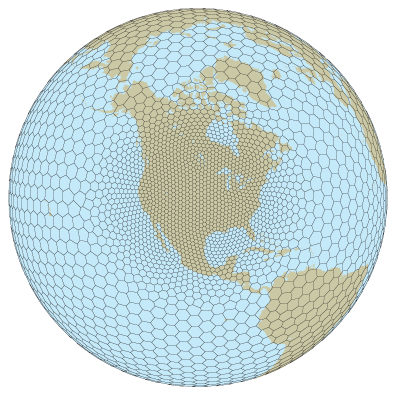

MPAS Atmosphere |
| Overview The atmospheric component of MPAS, as with all MPAS components, uses an unstructured centroidal Voronoi mesh (grid, or tessellation) and C-grid staggering of the state variables as the basis for the horizontal discretization in the fluid-flow solver. The unstructured variable resolution meshes can be generated having smoothly-varying mesh transitions (see the figure to the right); we believe that this capability will ameliorate many issues associated with the traditional mesh refinement strategy of one-way and two-way grid nesting where the transitions are abrupt. Using the flexibility of the MPAS meshes, we are working towards applications in high-resolution numerical weather prediction (NWP) and regional climate, in addition to global uniform-resolution NWP and climate applications. The MPAS atmosphere consists of an atmospheric fluid-flow solver (the dynamical core) and a subset of the Advanced Research WRF (ARW) model atmospheric physics. Work is underway to port the MPAS atmospheric dynamical core to the Community Atmosphere Model (CAM) in the Community Earth Systems Model (CESM), which will provide coupling between MPAS Ocean and MPAS Atmosphere and coupling to the CAM physics and other components of the CESM system. Work is also progressing on porting the National Centers for Environmental Prediction (NCEP) Global Forecast System (GFS) atmospheric physics to MPAS. |
 A variable resolution MPAS Voronoi mesh |
| Dynamical Core The MPAS atmospheric dynamical core solves the fully compressible nonhydrostatic equations of motion. The horizontal Voronoi mesh, depicted to the right, uses a C-grid staggering of the state variables; the horizontal velocity u is defined as the normal velocity on Voronoi cell faces while the other state variables are defined at the cell centers. The dual of the Voronoi mesh is the triangular mesh shown in dashed lines in the figure. The variable resolution meshes a predominantly comprised of hexagons, but pentagons and septagons are occasionally present. The primary advances associated with the C-grid-staggered Voronoi mesh can be found in Thuburn et al JCP (2009) and Ringler et al JCP (2010). A description of the compressible nonhydrostatic atmospheric solver can be found in Skamarock et al MWR (2012). The fully compressible nonhydrostatic equations are cast in terms of a geometric-height vertical coordinate, and the solver makes use of a split-explicit time integration scheme that is described in Klemp et al MWR (2007). The time-integration scheme employs a 3rd-order Runge-Kutta method, and large time step, for the meteorologically significant modes and a forward-backward method with smaller time steps for the acoustic modes (See Wicker and Skamarock MWR 2002). The numerical schemes used in the atmospheric component of MPAS are very similar to those employed in the Advanced Research WRF model. The major differences are that the ARW model uses rectangular meshes and a hydrostatic pressure (mass) vertical coordinate. Additionally, MPAS uses a vector-invariant form of the horizontal momentum equation and a more general version of the WRF transport scheme given in Skamarock and Gassmann MWR (2011). |
C-grid staggered variables on the horizontal Voronoi mesh. Normal velocities are defined on the cell faces and all other scalar variables are defined at the cell centers. Vertical vorticity is defined at the cell vertices. |
|
MPAS cross section through the Himalayas at 28 degrees N latitude for a 15 km (mean cell-center spacing) uniform mesh. The
model top is at 30 km. The vertical coordinate in the MPAS-Atmosphere
solver allows for both the traditional terrain following coordinate (right) and a general hybrid coordinate (left).
|
| The MPAS-Atmosphere solver can
use a traditional terrain-following height coordinate, where the
horizontal coordinate surfaces are terrain following at the lowest
level and relax to a constant height surface at the rigid-lid upper
boundary. MPAS-A can also use a generalized hybrid coordinate
that can be configured to relax to a constant height at an intermediate
height below the lid and, additionally, preferentially filter the small
wavelength topography features in the terrain-following component at
higher levels. The formulation is described in Klemp MWR (2011). |
| Atmospheric Physics The MPAS-Atmosphere solver uses a physics suite taken from the Advanced Research WRF model focusing on the physics configurations used in the ARW Nested Regional Climate Model application (WRF-NRCM) and the tropical cyclone prediction experiments. The physics are described in the ARW Technical Note. The available physics packages are: Surface Layer: module_sf_sfclay.F (Monin-Obukhov) as in WRF 3.8.1; MYNN as in WRF 3.6.1. PBL: YSU as in WRF 3.8.1; MYNN as in WRF 3.6.1. Land Surface Model: Noah (4-layers) as in WRF 3.3.1. Gravity Wave Drag: YSU GWDO as in WRF 3.6.1. Convection: Kain-Fritsch as in WRF 3.2.1; Tiedtke as in WRF 3.3.1; New Tiedtke as in WRF 3.8.1; modified version of scale-aware Grell-Freitas as in WRF 3.6.1. Microphysics: WSM6 as in WRF 3.8.1; Thompson (non-aerosol aware) as in WRF 3.8.1; Kessler Radiation: RRTMG sw as in WRF 3.8.1; RRTMG lw as in WRF 3.8.1; CAM radiation as in WRF 3.3.1, with some additions from WRF 3.5. MPAS-Atmosphere will also be available as a CAM core in CESM. As such the MPAS dynamical core will have use of the full CAM physics suite as well as model coupling to other CESM components included the ocean cores MPAS and POP, the land model CLM, ice models, etc. |
Reflectivity from an MPAS 3 km global
forecast initialized on 2010-10-23 at 0 UTC. The reflectivity is
diagnosed from the WSM6 hydrometeor fields. Isolated severe convection is evident ahead of the cold front as was observed.
|
| Further Information More information on MPAS can be found on the MPAS home page. The atmospheric solver is being developed primarily at the National Center for Atmospheric Research (NCAR) in the Mesoscale and Microscale Meteorology (MMM) Division in NCAR's Earth Systems Laboratory (NESL). For further information on the atmospheric solver contact Bill Skamarock at NCAR. |